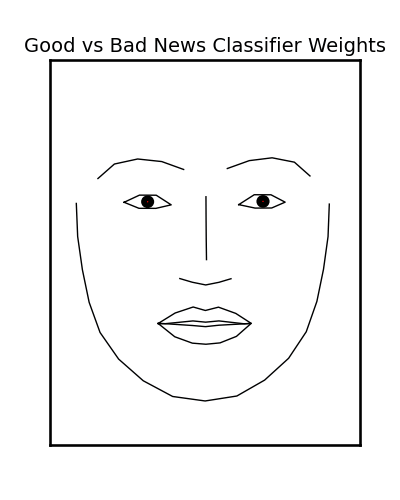

5. Running a full analysis#
Written by Jin Hyun Cheong and Eshin Jolly
In this tutorial we’ll perform a real analysis on part of the open dataset from “A Data-Driven Characterisation Of Natural Facial Expressions When Giving Good And Bad News” by Watson & Johnston 2020. You can try it out interactively in Google Collab: 
In the original paper the authors had 3 speakers deliver good or bad news while filming their facial expressions. They found that could accurately “decode” each condition based on participants’ facial expressions extracted either using a custom multi-chanel-gradient model or action units (AUs) extracted using Open Face.
In this tutorial we’ll show how easiy it is to not only reproduce their decoding analysis with py-feat, but just as easily perform additional analyses. Specifically we’ll:
Download 20 of the first subject’s videos (the full dataset is available on OSF
Extract facial features using the
DetectorAggregate and summarize detections per video using
FexTrain and test a decoder to classify good vs bad news using extracted emotions, AUs, and poses
Run a fMRI style “mass-univariate” comparison across all AUs between conditions
Run a time-series analysis comparing videos based on the time-courses of extracted facial fatures
# Uncomment the line below and run this only if you're using Google Collab
# !pip install -q py-feat
5.1 Download the data#
Here’s we’ll download and save the first 20 video files and their corresponding attributes from OSF. The next cell should run quickly on Google Collab, but will depend on your own internet conection if you’re executing this notebook locally. You can rerun this cell in case the download fails for any reason, as it should skip downloading existing files:
import os
import subprocess
import numpy as np
import pandas as pd
import matplotlib.pyplot as plt
from glob import glob
import seaborn as sns
from tqdm import tqdm
sns.set_context("talk")
files_to_download = {
"4c5mb": 'clip_attrs.csv',
"n6rt3": '001.mp4',
"3gh8v": '002.mp4',
"twqxs": '003.mp4',
"nc7d9": '004.mp4',
"nrwcm": '005.mp4',
"2rk9c": '006.mp4',
"mxkzq": '007.mp4',
"c2na7": '008.mp4',
"wj7zy": '009.mp4',
"mxywn": '010.mp4',
"6bn3g": '011.mp4',
"jkwsp": '012.mp4',
"54gtv": '013.mp4',
"c3hpm": '014.mp4',
"utdqj": '015.mp4',
"hpw4a": '016.mp4',
"94swe": '017.mp4',
"qte5y": '018.mp4',
"aykvu": '019.mp4',
"3d5ry": '020.mp4',
}
for fid, fname in files_to_download.items():
if not os.path.exists(fname):
print(f"Downloading: {fname}")
subprocess.run(f"wget -O {fname} --content-disposition https://osf.io/{fid}/download".split())
videos = np.sort(glob("*.mp4"))
# Load in attributes
clip_attrs = pd.read_csv("clip_attrs.csv")
# Add in file names and rename conditions
clip_attrs = clip_attrs.assign(
input=clip_attrs.clipN.apply(lambda x: str(x).zfill(3) + ".mp4"),
condition=clip_attrs["class"].replace({"gn": "goodNews", "ists": "badNews"}),
)
# We're only using a subset of videos for this tutorial so drop the rest
clip_attrs = clip_attrs.query("input in @videos")
print(f"Downloaded {len(videos)} videos")
print(f"Downloaded attributes files with {clip_attrs.shape[0]} rows")
Downloaded 20 videos
Downloaded attributes files with 20 rows
5.2 Extract facial features using Detector#
Now we’ll initialize a new Detector, process each frame of each video using .detect_video(), and save the results to csv files named after the video.
from feat import Detector
# Initialize the default detector
detector = Detector()
# Loop over and process each video and save results to csv
for video in tqdm(videos):
out_name = video.replace(".mp4", ".csv")
if not os.path.exists(out_name):
print(f"Processing: {video}")
# This is the line that does detection!
fex = detector.detect_video(video)
fex.to_csv(out_name, index=False)
100%|██████████| 20/20 [00:00<00:00, 9074.65it/s]
5.3. Aggregate detections using a Fex dataframe#
Then we can use read_feat to load each CSV file and concatenate them together:
from feat.utils.io import read_feat
fex = pd.concat(map(lambda video: read_feat(video.replace(".mp4", ".csv")), videos))
print(f"Unique videos: {fex.inputs.nunique()}")
print(f"Total processed frames: {fex.shape[0]}")
print(f"Avg frames per video: {fex.groupby('input').size().mean()}")
Unique videos: 20
Total processed frames: 947
Avg frames per video: 47.35
Our Fex dataframe now contains all detections for all frames of each video
fex.shape
fex.head()
(947, 173)
| FaceRectX | FaceRectY | FaceRectWidth | FaceRectHeight | FaceScore | x_0 | x_1 | x_2 | x_3 | x_4 | ... | AU43 | anger | disgust | fear | happiness | sadness | surprise | neutral | input | frame | |
|---|---|---|---|---|---|---|---|---|---|---|---|---|---|---|---|---|---|---|---|---|---|
| 0 | 236.153809 | 182.587204 | 254.930786 | 349.109451 | 0.999326 | 355.590267 | 361.166635 | 370.024031 | 382.002333 | 405.379242 | ... | 0.017959 | 0.000438 | 0.000117 | 0.000483 | 0.981574 | 0.001495 | 0.013396 | 0.002497 | 001.csv | 0 |
| 1 | 236.198212 | 182.582245 | 254.905151 | 349.177582 | 0.999327 | 355.947047 | 361.429636 | 370.189673 | 382.098332 | 405.381871 | ... | 0.031311 | 0.000422 | 0.000110 | 0.000471 | 0.981490 | 0.001407 | 0.013663 | 0.002437 | 001.csv | 1 |
| 2 | 237.683929 | 181.546631 | 254.771271 | 349.269104 | 0.999371 | 357.488551 | 363.557662 | 372.905629 | 385.126006 | 408.333512 | ... | 0.022510 | 0.000379 | 0.000112 | 0.000329 | 0.988872 | 0.001477 | 0.006877 | 0.001954 | 001.csv | 2 |
| 3 | 239.606812 | 181.352219 | 254.592834 | 351.001907 | 0.999298 | 358.248297 | 364.062520 | 373.173968 | 385.128103 | 407.907217 | ... | 0.040652 | 0.000451 | 0.000122 | 0.000229 | 0.989229 | 0.001519 | 0.005104 | 0.003346 | 001.csv | 3 |
| 4 | 238.934204 | 177.416992 | 257.367035 | 356.700012 | 0.999240 | 353.728640 | 360.555682 | 370.127252 | 382.294048 | 405.861680 | ... | 0.090656 | 0.000388 | 0.000067 | 0.000447 | 0.976272 | 0.001275 | 0.016979 | 0.004573 | 001.csv | 4 |
5 rows × 173 columns
5.3.1 Summarize data with Fex.sessions#
Fex dataframes have a special attribute called .sessions that act as a grouping factor to make it easier to compute summary statistics with any of the .extract_* methods. By default .sessions is None, but you can use the .update_sessions() to return a new Fex dataframe with .sessions set.
For example, if we update the sessions to be the name of each video, then .extract_mean() will group video-frames (rows) by video making it easy to compute a single summary statistic per file:
by_video = fex.update_sessions(fex["input"])
# Compute the mean per video
video_means = by_video.extract_mean()
video_means # 20 rows for 20 videos
| mean_FaceRectX | mean_FaceRectY | mean_FaceRectWidth | mean_FaceRectHeight | mean_FaceScore | mean_x_0 | mean_x_1 | mean_x_2 | mean_x_3 | mean_x_4 | ... | mean_AU28 | mean_AU43 | mean_anger | mean_disgust | mean_fear | mean_happiness | mean_sadness | mean_surprise | mean_neutral | mean_frame | |
|---|---|---|---|---|---|---|---|---|---|---|---|---|---|---|---|---|---|---|---|---|---|
| 001.csv | 234.431216 | 179.408653 | 253.195079 | 349.057933 | 0.999415 | 351.745947 | 358.669057 | 369.211596 | 382.289621 | 405.340749 | ... | 0.335354 | 0.058032 | 0.000840 | 0.000170 | 0.002119 | 0.955028 | 0.011139 | 0.022887 | 0.007818 | 19.5 |
| 002.csv | 235.137069 | 177.244835 | 247.376738 | 346.628496 | 0.999420 | 351.152403 | 356.936973 | 366.408657 | 378.847147 | 401.092449 | ... | 0.388296 | 0.091377 | 0.000609 | 0.000115 | 0.001898 | 0.879776 | 0.012571 | 0.094248 | 0.010782 | 13.5 |
| 003.csv | 231.095030 | 175.658435 | 251.547485 | 351.115814 | 0.999401 | 342.375212 | 346.903972 | 354.548829 | 365.250301 | 386.696666 | ... | 0.144093 | 0.047709 | 0.000355 | 0.000061 | 0.001733 | 0.707242 | 0.001066 | 0.285287 | 0.004256 | 23.0 |
| 004.csv | 220.796929 | 176.294354 | 252.812039 | 353.827636 | 0.999425 | 328.644936 | 334.260224 | 342.829941 | 354.501717 | 376.853730 | ... | 0.147945 | 0.099202 | 0.000721 | 0.000068 | 0.001341 | 0.847641 | 0.012390 | 0.132939 | 0.004900 | 22.0 |
| 005.csv | 208.867616 | 189.404122 | 255.296208 | 349.989491 | 0.999394 | 312.148711 | 317.922322 | 327.292733 | 339.933222 | 363.364786 | ... | 0.199008 | 0.078288 | 0.000226 | 0.000043 | 0.000490 | 0.986752 | 0.001082 | 0.009684 | 0.001723 | 22.0 |
| 006.csv | 228.037525 | 170.552953 | 248.412705 | 350.898739 | 0.999457 | 339.691768 | 343.841731 | 351.142231 | 361.316873 | 382.081545 | ... | 0.205943 | 0.046411 | 0.000246 | 0.000036 | 0.000628 | 0.941467 | 0.001282 | 0.054525 | 0.001816 | 23.5 |
| 007.csv | 232.329588 | 173.086361 | 249.666888 | 349.413313 | 0.999380 | 345.372773 | 348.641482 | 355.122228 | 364.639966 | 384.731837 | ... | 0.109040 | 0.069314 | 0.000374 | 0.000058 | 0.002243 | 0.933058 | 0.003285 | 0.057281 | 0.003701 | 13.0 |
| 008.csv | 217.474341 | 174.956181 | 252.330176 | 351.949308 | 0.999335 | 322.590086 | 328.698168 | 337.769330 | 348.969558 | 369.878785 | ... | 0.293920 | 0.046400 | 0.000327 | 0.000091 | 0.004953 | 0.592064 | 0.003459 | 0.393644 | 0.005462 | 17.5 |
| 009.csv | 221.263109 | 167.619245 | 249.194669 | 355.021916 | 0.999307 | 328.585905 | 334.560713 | 343.619836 | 355.424001 | 377.394425 | ... | 0.262887 | 0.044629 | 0.000317 | 0.000195 | 0.014244 | 0.536781 | 0.003003 | 0.442032 | 0.003427 | 20.5 |
| 010.csv | 227.248687 | 184.991356 | 248.113907 | 348.310015 | 0.999450 | 336.439669 | 342.711365 | 352.625989 | 365.147914 | 388.132257 | ... | 0.252469 | 0.041731 | 0.000243 | 0.000051 | 0.005075 | 0.691970 | 0.008150 | 0.290069 | 0.004443 | 26.5 |
| 011.csv | 222.215382 | 209.882381 | 246.810548 | 348.319372 | 0.999462 | 317.001702 | 329.615415 | 347.071755 | 367.541387 | 397.147639 | ... | 0.236520 | 0.022382 | 0.130460 | 0.007293 | 0.067473 | 0.134826 | 0.119239 | 0.239828 | 0.300882 | 17.5 |
| 012.csv | 224.773651 | 223.677334 | 243.875583 | 341.147256 | 0.999400 | 321.367646 | 334.862112 | 352.977879 | 374.908646 | 405.053755 | ... | 0.168390 | 0.171352 | 0.002793 | 0.001974 | 0.073120 | 0.066317 | 0.176804 | 0.657999 | 0.020993 | 23.5 |
| 013.csv | 229.422940 | 188.842976 | 246.955987 | 350.861501 | 0.999402 | 341.007234 | 351.553327 | 365.335356 | 382.232456 | 408.826613 | ... | 0.305139 | 0.027319 | 0.001247 | 0.000341 | 0.027139 | 0.025583 | 0.140288 | 0.772149 | 0.033251 | 13.5 |
| 014.csv | 226.500757 | 180.036496 | 245.309567 | 352.485154 | 0.999373 | 326.507088 | 338.703004 | 355.255419 | 375.844798 | 405.824674 | ... | 0.125695 | 0.031951 | 0.004123 | 0.002852 | 0.259469 | 0.000338 | 0.242996 | 0.452750 | 0.037473 | 22.0 |
| 015.csv | 221.191514 | 194.450694 | 244.257210 | 350.411649 | 0.999404 | 318.571982 | 329.832546 | 345.395775 | 364.710552 | 393.250724 | ... | 0.149373 | 0.102222 | 0.001375 | 0.000311 | 0.195097 | 0.003530 | 0.434903 | 0.350142 | 0.014644 | 29.0 |
| 016.csv | 201.787207 | 188.279645 | 248.485522 | 345.852839 | 0.999459 | 297.753369 | 309.231162 | 324.626972 | 343.137091 | 370.771578 | ... | 0.302705 | 0.028967 | 0.002659 | 0.001119 | 0.053669 | 0.005470 | 0.150112 | 0.737356 | 0.049615 | 38.5 |
| 017.csv | 215.591319 | 195.263961 | 246.963525 | 342.558035 | 0.999355 | 323.741976 | 329.358193 | 338.566349 | 351.548930 | 373.243177 | ... | 0.192169 | 0.035812 | 0.000944 | 0.000358 | 0.061095 | 0.006041 | 0.050949 | 0.866098 | 0.014514 | 28.0 |
| 018.csv | 229.367711 | 186.727653 | 246.125126 | 352.387675 | 0.999429 | 328.829019 | 337.406731 | 350.572361 | 368.037250 | 395.964752 | ... | 0.149709 | 0.030375 | 0.007092 | 0.002789 | 0.155484 | 0.012824 | 0.175173 | 0.519115 | 0.127522 | 26.5 |
| 019.csv | 203.091716 | 183.023964 | 253.458237 | 352.042444 | 0.999275 | 303.143011 | 310.439069 | 321.088562 | 334.650816 | 358.007455 | ... | 0.383015 | 0.036445 | 0.000663 | 0.000140 | 0.116914 | 0.000767 | 0.374723 | 0.490313 | 0.016481 | 31.5 |
| 020.csv | 196.402858 | 186.635690 | 250.095409 | 339.914147 | 0.999489 | 293.626183 | 302.517683 | 314.678548 | 329.424593 | 353.108089 | ... | 0.346318 | 0.040663 | 0.000776 | 0.000236 | 0.086137 | 0.014581 | 0.059977 | 0.822615 | 0.015677 | 32.5 |
20 rows × 172 columns
Then we can grab the AU detections and call standard pandas methods like .loc and .plot:
# Grab the aus just for video 1
video001_aus = video_means.aus.loc['001.csv']
# Plot them
ax = video001_aus.plot(kind='bar', title='Video 001 AU detection');
ax.set(ylabel='Average Probability');
sns.despine();

5.3.2 Chaining operations#
.update_sessions() always returns a copy of the Fex object, so that you can chain operations together including existing pandas methods like .plot(). Here’s an example passing a dictionary to .update_sessions(), which maps between old and new session names:
# Which condition each video belonged to
video2condition = dict(
zip(
clip_attrs["input"].str.replace(".mp4", ".csv", regex=False),
clip_attrs["condition"],
)
)
# Update sesssions to group by condition, compute means (per condition), and make a
# barplot of the mean AUs for each condition
ax = (
by_video.update_sessions(video2condition)
.extract_mean()
.aus.plot(kind="bar", legend=False, title="Mean AU detection by condition")
)
ax.set(ylabel='Average Probability', title='AU detection by condition', xticklabels=['Good News', 'Bad News']);
plt.xticks(rotation=0);
sns.despine();

We can also focus in on the AUs associated with happiness:
aus = ["AU06", "AU12", "AU25"] # from https://py-feat.org/pages/au_reference.html
# Update the sessions to condition compute summary stats
summary = by_video.update_sessions(video2condition).extract_summary(
mean=True, sem=True, std=False, min=False, max=False
)
# Organize them for plotting
bad_means = summary.loc["badNews", [f"mean_{au}" for au in aus]]
bad_sems = summary.loc["badNews", [f"sem_{au}" for au in aus]]
good_means = summary.loc["goodNews", [f"mean_{au}" for au in aus]]
good_sems = summary.loc["goodNews", [f"sem_{au}" for au in aus]]
# Plot
fig, ax = plt.subplots(figsize=(3, 4))
ind = np.arange(len(bad_means))
width = 0.35
rects1 = ax.bar(ind - width / 2, bad_means, width, yerr=bad_sems, label="Bad News");
rects2 = ax.bar(ind + width / 2, good_means, width, yerr=good_sems, label="Good News");
ax.set(ylabel="Average Probability", title="", xticks=ind, xticklabels=aus, ylim=(0, 1));
ax.legend(loc="upper left", frameon=False);
plt.axhline(0.5, ls="--", color="k");
sns.despine();
plt.xticks(rotation=45);
plt.tight_layout();
plt.savefig('./fig_maker/au_diffs.pdf', bbox_inches='tight');

5.4 Comparing the condition difference across AUs using regression#
One way we can compare what AUs in the plot show significant differences is by using the .regress() method along with numerical contrast codes. For example we can test the difference in activation of every AU when participants delivered good vs bad news.
This is analogous to the “mass-univariate” GLM approach in fMRI research, and allows us to identify what AUs are significantly more active in one condition vs another:
# Save the by_condition fex from above
by_condition = video_means.update_sessions(video2condition)
# We set numerical contrasts to compare mean good news > mean bad news
by_condition_codes = by_condition.update_sessions({"goodNews": 1., "badNews": -1})
# Now we perform a regression (t-test) at every AU
b, se, t, p, df, residuals = by_condition_codes.regress(
X="sessions", y="aus", fit_intercept=True
)
# We can perform bonferroni correction for multiple comparisions:
p_bonf = p / p.shape[1]
results = pd.concat(
[
b.round(3).loc[["sessions"]].rename(index={"sessions": "betas"}),
se.round(3).loc[["sessions"]].rename(index={"sessions": "ses"}),
t.round(3).loc[["sessions"]].rename(index={"sessions": "t-stats"}),
df.round(3).loc[["sessions"]].rename(index={"sessions": "dof"}),
p_bonf.round(3).loc[["sessions"]].rename(index={"sessions": "p-values"}),
]
)
ax = results.loc["betas"].plot(
kind="bar",
yerr=results.loc["ses"],
color=[
"steelblue" if elem else "gray"
for elem in results.loc["p-values"] < 0.01
],
title="Good News > Bad News\n(blue: p < .01)",
);
xticks = ax.get_xticklabels();
xticks = [elem.get_text().split('_')[-1] for elem in xticks]
ax.set_xticklabels(xticks);
ax.set_ylabel('Beta +/- SE');
sns.despine();

5.5 Decoding condition from facial features#
We can easily perform an analysis just like Watson et al, by training a LinearDiscriminantAnalysis (LDA) decoder to classify which condition a video came from based on average AU and headpose detections.
To do this we can use the .predict() which behaves just like .regress() but also requires a sklearn Estimator. We can use keyword arguments to perform 10-fold cross-validation to test the accuracy of each decoder:
from sklearn.discriminant_analysis import LinearDiscriminantAnalysis
from sklearn.preprocessing import (
StandardScaler,
) # always a good idea to normalize your features!
from sklearn.pipeline import make_pipeline
# List of different models we'll train
feature_list = ["emotions", "aus", "poses", "emotions,poses", "aus,poses"]
results = []
models = {}
for features in feature_list:
# .predict is just like .regress, but this time session is our y.
model, accuracy = by_condition.predict(
X=features,
y="sessions",
model=make_pipeline(StandardScaler(), LinearDiscriminantAnalysis()),
cv_kwargs={"cv": 10},
)
# Save the model
models[features] = model
# Save the performance for plotting
results.append(
pd.DataFrame(
{"Accuracy": accuracy * 100, "Features": [features] * len(accuracy)}
)
)
# Print performance
print(
f"{features} model accuracy: {accuracy.mean()*100:.3g}% +/- {accuracy.std()*100:.3g}%"
)
# Concat results into a single dataframe and tweak column names
results = pd.concat(results).assign(
Features=lambda df: df.Features.map(
{
"emotions": "Emotions",
"poses": "Pose",
"aus": "AUs",
"emotions,poses": "Emotions\n+ Pose",
"aus,poses": "AUs+Pose",
}
)
)
# Plot it
# with sns.plotting_context("talk", font_scale=1.8):
f, ax = plt.subplots(1, 1, figsize=(3.75,4));
ax = sns.barplot(
x="Features",
y="Accuracy",
errorbar="sd",
dodge=False,
hue="Features",
data=results,
ax=ax,
order=["Emotions", "Emotions\n+ Pose", "AUs+Pose", "AUs", "Pose"],
);
ax.get_legend().remove();
ax.set_title("Good News vs Bad News\nClassifier Performance");
ax.set(ylabel="Accuracy", xlabel="");
sns.despine();
plt.axhline(y=50, ls="--", color="k");
plt.xticks(rotation=90);
plt.tight_layout();
plt.savefig('./decoding_acc.pdf', bbox_inches='tight');
emotions model accuracy: 100% +/- 0%
aus model accuracy: 85% +/- 22.9%
poses model accuracy: 80% +/- 33.2%
emotions,poses model accuracy: 95% +/- 15%
aus,poses model accuracy: 90% +/- 20%

5.5.1 Visualizing decoder weights#
Using what we learned in the previous tutorial, we can visualize the coefficients for any models that used AU features. This allows us to “see” the underlying facial expression that the classifier learned!
from feat.plotting import plot_face
plot_face(
au=models['aus'][1].coef_.squeeze(), # the LDA coefs from the AUs pipeline model
feature_range=(0, 1),
muscles={"all": "heatmap"},
title="Expression reconstructed from\nAU classifier weights",
title_kwargs={'wrap':False}
);
sns.despine(left=True,bottom=True);
plt.savefig('./fig_maker/weights.pdf', bbox_inches='tight');

Even cooler we can animate that face expression to emphasize what’s changing. Here we start from a neutral face:
from feat.plotting import animate_face
animation = animate_face(
end=models['aus'][1].coef_.squeeze(), # same as before
feature_range=(0, 1),
muscles={'all': 'heatmap'},
title="Good vs Bad News Classifier Weights",
save="weights.gif",
)

5.6 Time-series analysis#
Finally we might be interested in looking the similarity of the detected features over time. We can do that using the .isc() method which takes a column and metric to use. Here we compare detected happiness between all pairs of videos.
We use some helper functions to cluster, sort, and plot the correlation matrix. Warmer colors indicate a pair of videos elicited more similar detected Happiness over time. We see that some videos show high-correlation in-terms of their detected happiness over-time. This is likely why the classifier above was able to decode conditions so well.
# ISC returns a video x video pearson correlation matrix
isc = fex.isc(col = "happiness", method='pearson')
def cluster_corrs(df):
"""Helper to reorder rows and cols of correlation matrix based on clustering"""
import scipy.cluster.hierarchy as sch
pairwise_distances = sch.distance.pdist(df)
linkage = sch.linkage(pairwise_distances, method="complete")
cluster_distance_threshold = pairwise_distances.max() / 2
idx_to_cluster_array = sch.fcluster(
linkage, cluster_distance_threshold, criterion="distance"
)
idx = np.argsort(idx_to_cluster_array)
return df.iloc[idx, :].T.iloc[idx, :]
def add_cond_to_ticks(ax):
"""Helper to add condition info to each tick label"""
xlabels, ylabels = [], []
for xlabel, ylabel in zip(ax.get_xticklabels(), ax.get_yticklabels()):
x_condition = video2condition[xlabel.get_text()]
y_condition = video2condition[ylabel.get_text()]
x_new = f"{x_condition[:-4]}_{xlabel.get_text().split('.csv')[0][1:]}"
y_new = f"{y_condition[:-4]}_{ylabel.get_text().split('.csv')[0][1:]}"
xlabels.append(x_new)
ylabels.append(y_new)
ax.set_xticklabels(xlabels);
ax.set_yticklabels(ylabels);
return ax
# Plot it
ax = sns.heatmap(
cluster_corrs(isc),
cmap="RdBu_r",
vmin=-1, vmax=1,
square=True,
)
ax = add_cond_to_ticks(ax)
ax.set(xlabel="", ylabel="", title="Inter-video Happiness\ntimeseries correlation");
plt.savefig('./fig_maker/isc.pdf', bbox_inches='tight');